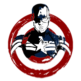

Comics

Ao contrário de muitos diversos super-heróis “recrutados” para combater os nazistas nos quadrinhos americanos nos anos 1940, Steve Rogers foi concebido pelo roterista Joe Simon e pelo desenhista Jack Kirby especificamente com essa finalidade. O “Sentinela das nossas costas” - esboço do epíteto que ficaria depois ligado definitifamente ao personagem, Sentinela da Liberdade - já estreava na capa Capitan America Comics #1 Embora tenha data de capa marcada como março de 1941, a HQ saiu pela Timely Comics - editora que depois se tornaria a Marvel - em dezembro de 1940, e vendeu quase um milhão de exemplares.
Tv Series
- - Em 1979, foram lançados dois telefilmes na emissora CBS, Captain America (19 de Janeiro) e Captain America II: Death Too Soon (23 de Novembro). Reb Brown interpretou Steve Rogers
- - Capitão América foi uma das séries adaptadas no desenho animado The Marvel Super Heroes.
- - O Capitão aparece em episódios de X-Men e X-Men: Evolution tratando da história de Wolverine na Segunda Guerra
- - O Capitão tem três pequenas aparições em Homem-Aranha: A Série Animada.
- - É um dos membros fundadores dos Vingadores em The Avengers: United They Stand, contudo, aparece em apenas um episódio.
- É um dos protagonistas de Esquadrão de Heróis, The Avengers: Earth's Mightiest Heroes e Vingadores Unidos.